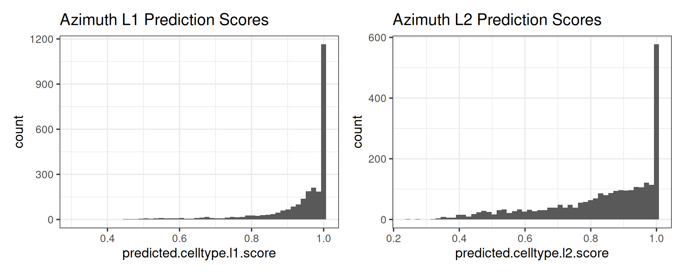
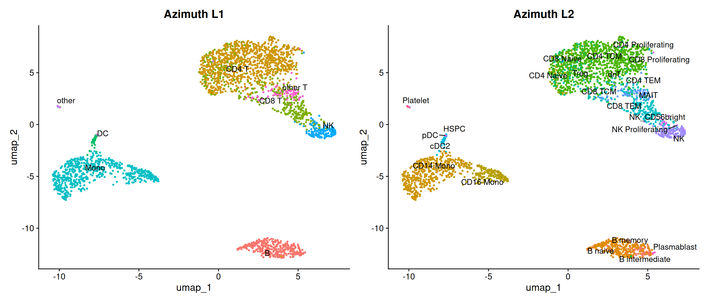
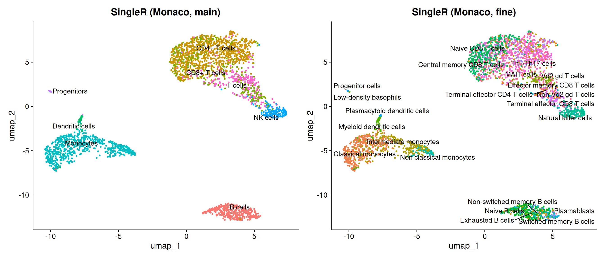
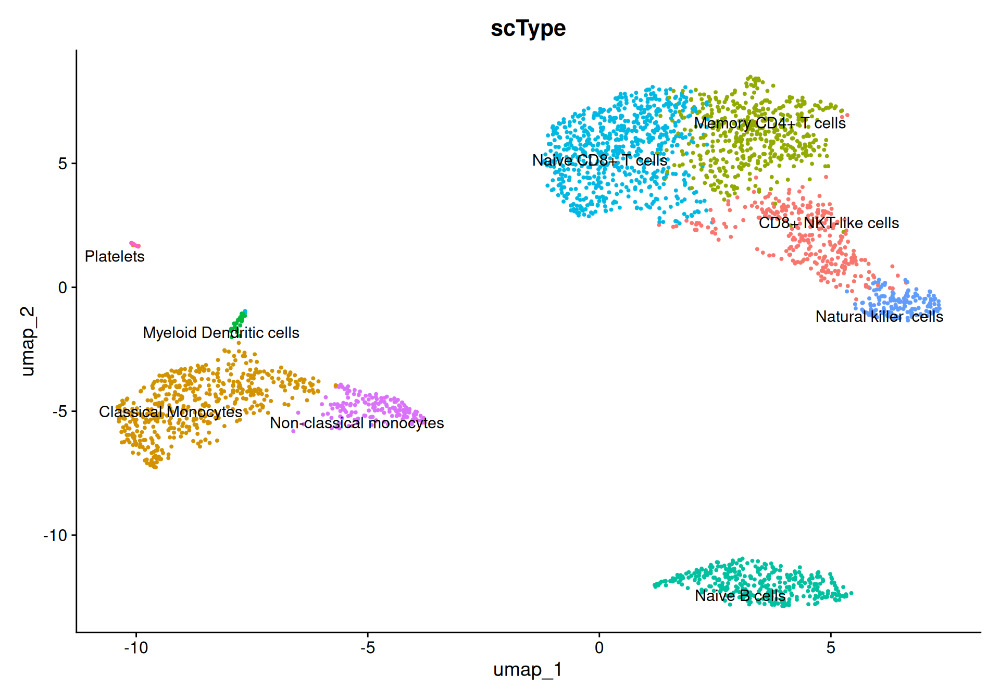
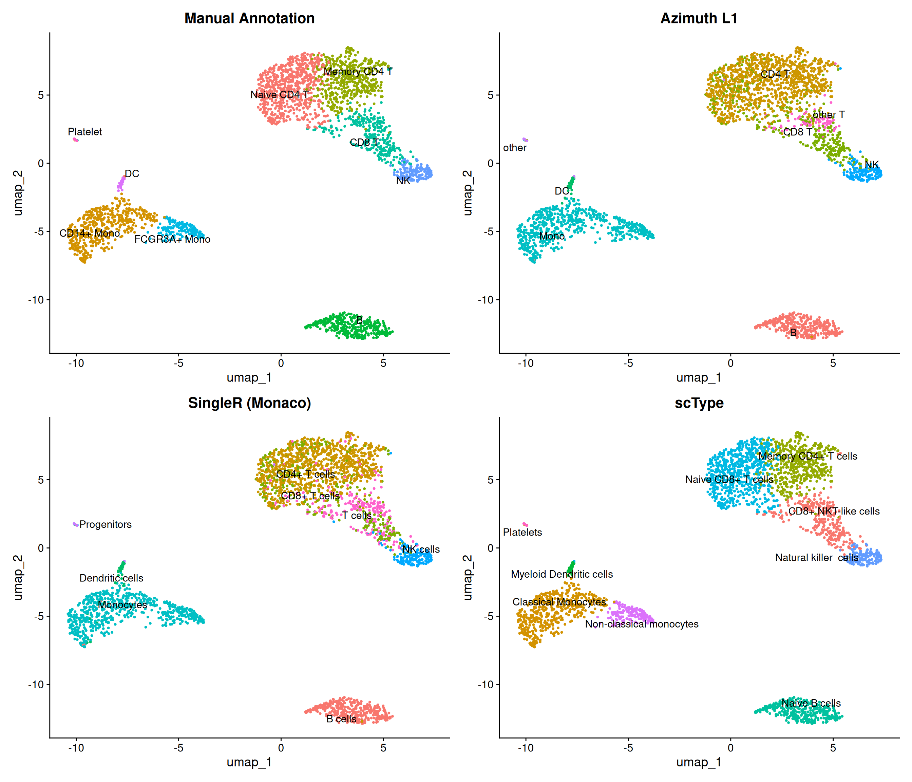
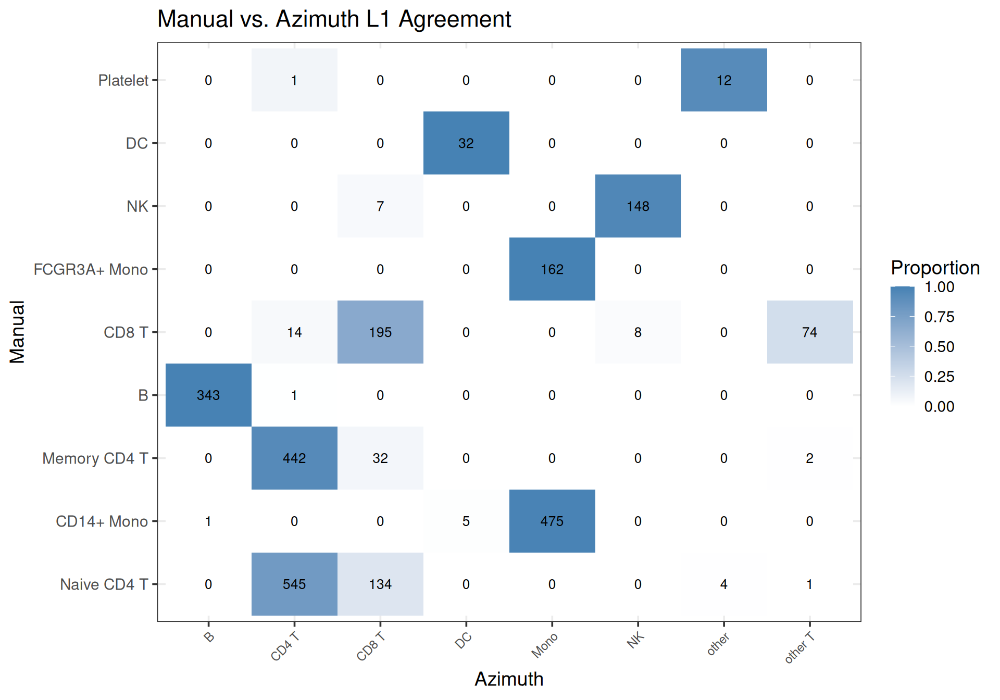
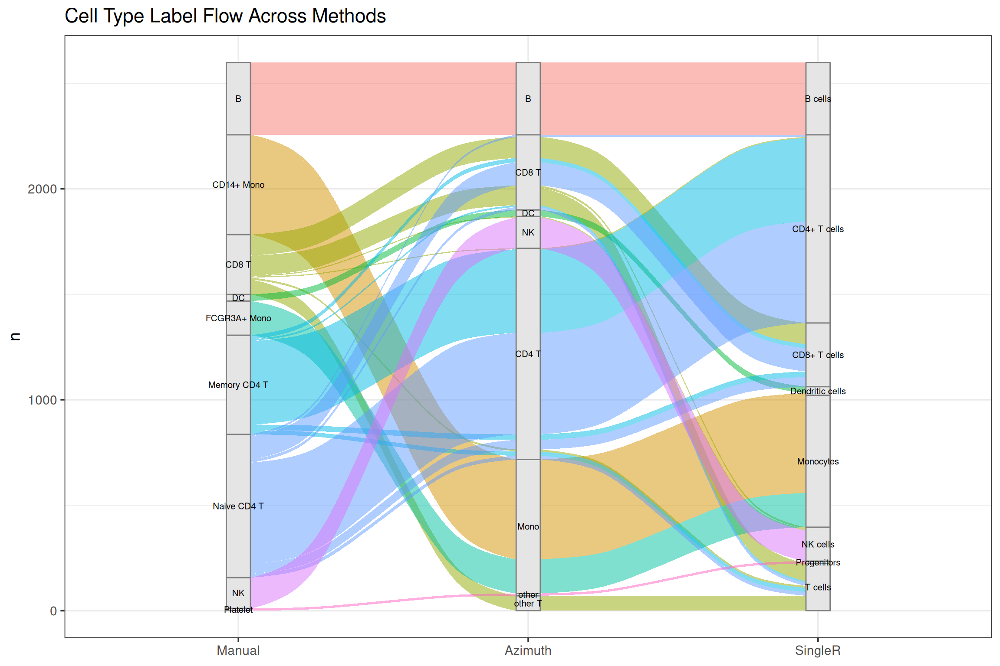

# Installation (run once, not part of this document):
# install.packages("Azimuth", repos = "https://satijalab.r-universe.dev")
# BiocManager::install(c("SingleR", "celldex", "SingleCellExperiment"))
# install.packages("ggalluvial")
# scType: no install needed (sourced from GitHub at runtime)
library(Seurat)
library(Azimuth)
library(SingleR)
library(celldex)
library(SingleCellExperiment)
library(dplyr)
library(ggplot2)
library(patchwork)
library(ggalluvial)
library(HGNChelper)
base_size <- 14
theme_set(theme_bw(base_size = base_size))Automated Cell Type Annotation: Comparing Azimuth, SingleR, and scType
Source: cell-type-annotation.qmd
Introduction
Manual cell type annotation relies on expert knowledge of canonical markers and can be subjective. Automated methods offer reproducibility, speed, and the ability to leverage large reference datasets. This document compares three approaches on the PBMC3K dataset from the clustering tutorial:
- Azimuth — reference-mapping via Seurat’s anchor-based transfer learning, using a pre-built PBMC reference atlas
- SingleR — correlation-based annotation against reference transcriptomes of purified cell types
- scType — marker-gene-based scoring using a curated database of cell type markers
Setup
Load Data
Load the processed PBMC3K Seurat object from the clustering tutorial. This object has clusters 0–8, UMAP embedding, and manual cell type labels in Idents().
pbmc <- readRDS(here::here("output", "pbmc3k_final.rds"))
pbmcAn object of class Seurat
13714 features across 2638 samples within 1 assay
Active assay: RNA (13714 features, 2000 variable features)
3 layers present: counts, data, scale.data
2 dimensional reductions calculated: pca, umapStore the manual annotations in a dedicated metadata column so they are preserved when Idents() is overwritten by downstream methods.
pbmc$manual_annotation <- Idents(pbmc)
knitr::kable(as.data.frame(table(CellType = pbmc$manual_annotation)),
row.names = FALSE)| CellType | Freq |
|---|---|
| Naive CD4 T | 684 |
| CD14+ Mono | 481 |
| Memory CD4 T | 476 |
| B | 344 |
| CD8 T | 291 |
| FCGR3A+ Mono | 162 |
| NK | 155 |
| DC | 32 |
| Platelet | 13 |
Method 1: Azimuth (Reference Mapping)
Azimuth maps query cells onto a pre-built reference atlas (Hao et al. 2021) using anchor-based transfer learning. It provides hierarchical labels at two resolutions (L1 broad, L2 fine) along with prediction scores indicating annotation confidence.
Note: the first run downloads the reference (~1.5 GB).
pbmc <- RunAzimuth(pbmc, reference = "pbmcref")head(pbmc@meta.data[, c("predicted.celltype.l1", "predicted.celltype.l2",
"predicted.celltype.l1.score",
"predicted.celltype.l2.score")]) predicted.celltype.l1 predicted.celltype.l2
AAACATACAACCAC-1 CD8 T CD8 TCM
AAACATTGAGCTAC-1 B B intermediate
AAACATTGATCAGC-1 CD4 T CD4 TCM
AAACCGTGCTTCCG-1 Mono CD14 Mono
AAACCGTGTATGCG-1 NK NK
AAACGCACTGGTAC-1 CD4 T CD4 TCM
predicted.celltype.l1.score predicted.celltype.l2.score
AAACATACAACCAC-1 0.8977431 0.8089182
AAACATTGAGCTAC-1 1.0000000 0.6301609
AAACATTGATCAGC-1 0.9710781 0.8135514
AAACCGTGCTTCCG-1 1.0000000 0.6507180
AAACCGTGTATGCG-1 1.0000000 1.0000000
AAACGCACTGGTAC-1 0.9417227 0.7291713Prediction score distributions
Higher scores indicate greater annotation confidence.
p1 <- ggplot(pbmc@meta.data, aes(x = predicted.celltype.l1.score)) +
geom_histogram(bins = 50) +
ggtitle("Azimuth L1 Prediction Scores")
p2 <- ggplot(pbmc@meta.data, aes(x = predicted.celltype.l2.score)) +
geom_histogram(bins = 50) +
ggtitle("Azimuth L2 Prediction Scores")
p1 + p2
UMAP by Azimuth labels
p1 <- DimPlot(pbmc, group.by = "predicted.celltype.l1",
label = TRUE, repel = TRUE) +
NoLegend() + ggtitle("Azimuth L1")
p2 <- DimPlot(pbmc, group.by = "predicted.celltype.l2",
label = TRUE, repel = TRUE) +
NoLegend() + ggtitle("Azimuth L2")
p1 + p2
Method 2: SingleR (Reference Correlation)
SingleR correlates each cell’s expression profile against reference datasets of purified cell types. We use the Monaco Immune Data reference, which provides both broad (label.main) and fine-grained (label.fine) annotations for immune cells.
monaco_ref <- MonacoImmuneData()Convert the Seurat object to SingleCellExperiment format for SingleR input.
# SeuratObject/alabaster.base S4 class cache and reddim_names warnings are
# harmless artifacts of the Seurat-to-SCE conversion
sce <- as.SingleCellExperiment(pbmc)singler_main <- SingleR(
test = sce,
ref = monaco_ref,
labels = monaco_ref$label.main
)
singler_fine <- SingleR(
test = sce,
ref = monaco_ref,
labels = monaco_ref$label.fine
)pbmc$singler_monaco_main <- singler_main$labels
pbmc$singler_monaco_fine <- singler_fine$labelsAnnotation confidence
SingleR prunes low-confidence assignments (setting them to NA).
data.frame(
Level = c("Main", "Fine"),
`Pruned cells` = c(sum(is.na(singler_main$pruned.labels)),
sum(is.na(singler_fine$pruned.labels))),
check.names = FALSE
) |> knitr::kable(row.names = FALSE)| Level | Pruned cells |
|---|---|
| Main | 10 |
| Fine | 13 |
UMAP by SingleR labels
p1 <- DimPlot(pbmc, group.by = "singler_monaco_main",
label = TRUE, repel = TRUE) +
NoLegend() + ggtitle("SingleR (Monaco, main)")
p2 <- DimPlot(pbmc, group.by = "singler_monaco_fine",
label = TRUE, repel = TRUE) +
NoLegend() + ggtitle("SingleR (Monaco, fine)")
p1 + p2
Method 3: scType (Marker-Gene Scoring)
scType scores cells using a curated marker gene database without needing a reference expression dataset. Unlike Azimuth and SingleR (which annotate per cell), scType assigns one label per cluster.
source("https://raw.githubusercontent.com/IanevskiAleksandr/sc-type/master/R/gene_sets_prepare.R")
source("https://raw.githubusercontent.com/IanevskiAleksandr/sc-type/master/R/sctype_score_.R")# checkGeneSymbols warns about non-standard gene symbol casing in the scType DB
db_url <- paste0(
"https://raw.githubusercontent.com/IanevskiAleksandr/sc-type/",
"master/ScTypeDB_full.xlsx"
)
tissue_type <- "Immune system"
gs_list <- gene_sets_prepare(db_url, tissue_type)DefaultAssay(pbmc) <- "RNA"
es_max <- sctype_score(
scRNAseqData = pbmc[["RNA"]]$scale.data,
gs = gs_list$gs_positive,
gs2 = gs_list$gs_negative
)
# Aggregate scores per cluster and pick the top-scoring cell type
cL_results <- do.call("rbind", lapply(
levels(pbmc$seurat_clusters),
function(cl) {
es_cl <- sort(
rowSums(es_max[, rownames(pbmc@meta.data[pbmc$seurat_clusters == cl, ])]),
decreasing = TRUE
)
head(data.frame(
cluster = cl,
type = names(es_cl),
score = es_cl,
ncells = sum(pbmc$seurat_clusters == cl)
), 3)
}
))
sctype_labels <- cL_results |>
group_by(cluster) |>
dplyr::filter(score == max(score)) |>
arrange(as.integer(as.character(cluster)))
knitr::kable(sctype_labels, row.names = FALSE, digits = 1)| cluster | type | score | ncells |
|---|---|---|---|
| 0 | Naive CD8+ T cells | 533.1 | 684 |
| 1 | Classical Monocytes | 1235.9 | 481 |
| 2 | Memory CD4+ T cells | 483.1 | 476 |
| 3 | Naive B cells | 1154.4 | 344 |
| 4 | CD8+ NKT-like cells | 511.5 | 291 |
| 5 | Non-classical monocytes | 543.3 | 162 |
| 6 | Natural killer cells | 683.7 | 155 |
| 7 | Myeloid Dendritic cells | 163.8 | 32 |
| 8 | Platelets | 264.5 | 13 |
pbmc$sctype_annotation <- sctype_labels$type[
match(pbmc$seurat_clusters, sctype_labels$cluster)
]UMAP by scType labels
DimPlot(pbmc, group.by = "sctype_annotation",
label = TRUE, repel = TRUE) +
NoLegend() + ggtitle("scType")
Comparison of Methods
Side-by-side UMAPs
p_manual <- DimPlot(pbmc, group.by = "manual_annotation",
label = TRUE, repel = TRUE) +
NoLegend() + ggtitle("Manual Annotation")
p_azimuth <- DimPlot(pbmc, group.by = "predicted.celltype.l1",
label = TRUE, repel = TRUE) +
NoLegend() + ggtitle("Azimuth L1")
p_singler <- DimPlot(pbmc, group.by = "singler_monaco_main",
label = TRUE, repel = TRUE) +
NoLegend() + ggtitle("SingleR (Monaco)")
p_sctype <- DimPlot(pbmc, group.by = "sctype_annotation",
label = TRUE, repel = TRUE) +
NoLegend() + ggtitle("scType")
(p_manual + p_azimuth) / (p_singler + p_sctype)
Cross-tabulations
Manual vs. Azimuth L1
knitr::kable(
as.data.frame.matrix(table(
Manual = pbmc$manual_annotation,
Azimuth = pbmc$predicted.celltype.l1
))
)| B | CD4 T | CD8 T | DC | Mono | NK | other | other T | |
|---|---|---|---|---|---|---|---|---|
| Naive CD4 T | 0 | 545 | 134 | 0 | 0 | 0 | 4 | 1 |
| CD14+ Mono | 1 | 0 | 0 | 5 | 475 | 0 | 0 | 0 |
| Memory CD4 T | 0 | 442 | 32 | 0 | 0 | 0 | 0 | 2 |
| B | 343 | 1 | 0 | 0 | 0 | 0 | 0 | 0 |
| CD8 T | 0 | 14 | 195 | 0 | 0 | 8 | 0 | 74 |
| FCGR3A+ Mono | 0 | 0 | 0 | 0 | 162 | 0 | 0 | 0 |
| NK | 0 | 0 | 7 | 0 | 0 | 148 | 0 | 0 |
| DC | 0 | 0 | 0 | 32 | 0 | 0 | 0 | 0 |
| Platelet | 0 | 1 | 0 | 0 | 0 | 0 | 12 | 0 |
Manual vs. SingleR (Monaco, main)
knitr::kable(
as.data.frame.matrix(table(
Manual = pbmc$manual_annotation,
SingleR = pbmc$singler_monaco_main
))
)| B cells | CD4+ T cells | CD8+ T cells | Dendritic cells | Monocytes | NK cells | Progenitors | T cells | |
|---|---|---|---|---|---|---|---|---|
| Naive CD4 T | 0 | 491 | 156 | 0 | 0 | 0 | 4 | 33 |
| CD14+ Mono | 3 | 0 | 0 | 14 | 464 | 0 | 0 | 0 |
| Memory CD4 T | 0 | 400 | 47 | 0 | 0 | 0 | 0 | 29 |
| B | 342 | 1 | 1 | 0 | 0 | 0 | 0 | 0 |
| CD8 T | 0 | 6 | 103 | 0 | 0 | 15 | 0 | 167 |
| FCGR3A+ Mono | 0 | 0 | 0 | 0 | 162 | 0 | 0 | 0 |
| NK | 0 | 0 | 3 | 0 | 0 | 148 | 0 | 4 |
| DC | 0 | 0 | 0 | 31 | 1 | 0 | 0 | 0 |
| Platelet | 1 | 0 | 0 | 0 | 1 | 0 | 11 | 0 |
Manual vs. scType
knitr::kable(
as.data.frame.matrix(table(
Manual = pbmc$manual_annotation,
scType = pbmc$sctype_annotation
))
)| CD8+ NKT-like cells | Classical Monocytes | Memory CD4+ T cells | Myeloid Dendritic cells | Naive B cells | Naive CD8+ T cells | Natural killer cells | Non-classical monocytes | Platelets | |
|---|---|---|---|---|---|---|---|---|---|
| Naive CD4 T | 0 | 0 | 0 | 0 | 0 | 684 | 0 | 0 | 0 |
| CD14+ Mono | 0 | 481 | 0 | 0 | 0 | 0 | 0 | 0 | 0 |
| Memory CD4 T | 0 | 0 | 476 | 0 | 0 | 0 | 0 | 0 | 0 |
| B | 0 | 0 | 0 | 0 | 344 | 0 | 0 | 0 | 0 |
| CD8 T | 291 | 0 | 0 | 0 | 0 | 0 | 0 | 0 | 0 |
| FCGR3A+ Mono | 0 | 0 | 0 | 0 | 0 | 0 | 0 | 162 | 0 |
| NK | 0 | 0 | 0 | 0 | 0 | 0 | 155 | 0 | 0 |
| DC | 0 | 0 | 0 | 32 | 0 | 0 | 0 | 0 | 0 |
| Platelet | 0 | 0 | 0 | 0 | 0 | 0 | 0 | 0 | 13 |
Proportional heatmap (Manual vs. Azimuth)
cross_df <- as.data.frame(table(
Manual = pbmc$manual_annotation,
Azimuth = pbmc$predicted.celltype.l1
))
cross_df <- cross_df |>
group_by(Manual) |>
mutate(Proportion = Freq / sum(Freq))
ggplot(cross_df, aes(x = Azimuth, y = Manual, fill = Proportion)) +
geom_tile() +
geom_text(aes(label = Freq),
size = 0.7 * base_size / ggplot2::.pt) +
scale_fill_gradient(low = "white", high = "steelblue") +
theme(axis.text.x = element_text(angle = 45, hjust = 1, size = rel(0.8))) +
ggtitle("Manual vs. Azimuth L1 Agreement")
Alluvial plot
This shows how cells flow between annotation schemes. Only flows with 5 or more cells are shown for readability.
annotation_df <- data.frame(
Manual = as.character(pbmc$manual_annotation),
Azimuth = as.character(pbmc$predicted.celltype.l1),
SingleR = as.character(pbmc$singler_monaco_main)
)
alluvial_df <- annotation_df |>
dplyr::count(Manual, Azimuth, SingleR) |>
dplyr::filter(n >= 5)
ggplot(alluvial_df,
aes(axis1 = Manual, axis2 = Azimuth, axis3 = SingleR, y = n)) +
geom_alluvium(aes(fill = Manual), width = 1/12) +
geom_stratum(width = 1/12, fill = "grey90", color = "grey50") +
geom_text(stat = "stratum",
aes(label = after_stat(stratum)),
size = 0.55 * base_size / ggplot2::.pt) +
scale_x_discrete(limits = c("Manual", "Azimuth", "SingleR")) +
theme(legend.position = "none") +
ggtitle("Cell Type Label Flow Across Methods")
Discussion
All three methods largely agree on the major PBMC cell types (T cells, monocytes, B cells, NK cells), which is expected for a well-characterized tissue with abundant reference data.
Key differences between the methods:
Azimuth provides hierarchical labels (L1/L2) and prediction scores, making it easy to assess confidence. It requires a matching reference atlas, which limits applicability to tissues with available references.
SingleR annotates per-cell against bulk reference transcriptomes, offering broad reference coverage via
celldex. It provides pruning of low-confidence assignments. Results are sensitive to the choice of reference dataset.scType uses marker gene databases and assigns one label per cluster (not per cell). It is transparent and interpretable but depends on the quality of the marker database and inherits the granularity of the upstream clustering.
For novel or poorly characterized tissues where reference atlases are unavailable, SingleR with a broad reference or scType with custom marker lists may be the only viable automated options.
Save Annotated Object
saveRDS(pbmc, file = here::here("output", "pbmc3k_annotated.rds"))References
- Hao Y et al. (2024) “Dictionary learning for integrative, multimodal and scalable single-cell analysis.” Nat Biotechnol 42:293–304. https://doi.org/10.1038/s41587-023-01767-y
- Hao Y et al. (2021) “Integrated analysis of multimodal single-cell data.” Cell 184:3573–3587. https://doi.org/10.1016/j.cell.2021.04.048
- Aran D et al. (2019) “Reference-based analysis of lung single-cell sequencing reveals a transitional profibrotic macrophage.” Nat Immunol 20:163–172. https://doi.org/10.1038/s41590-018-0276-y
- Monaco G et al. (2019) “RNA-Seq Signatures Normalized by mRNA Abundance Allow Absolute Deconvolution of Human Immune Cell Types.” Cell Rep 26:1627–1640. https://doi.org/10.1016/j.celrep.2019.01.041
- Ianevski A, Giri AK, Aittokallio T (2022) “Fully-automated and ultra-fast cell-type identification using specific marker combinations from single-cell transcriptomic data.” Nat Commun 13:1246. https://doi.org/10.1038/s41467-022-28803-w
NoteSession Info
─ Session info ───────────────────────────────────────────────────────────────
setting value
version R version 4.5.3 (2026-03-11)
os Zorin OS 18
system x86_64, linux-gnu
ui X11
language (EN)
collate en_US.UTF-8
ctype en_US.UTF-8
tz America/New_York
date 2026-03-26
pandoc 3.6.3 @ /usr/share/positron/resources/app/quarto/bin/tools/x86_64/ (via rmarkdown)
quarto 1.8.27 @ /opt/quarto/bin/quarto
─ Packages ───────────────────────────────────────────────────────────────────
package * version date (UTC) lib source
abind 1.4-8 2024-09-12 [1] RSPM (R 4.5.0)
alabaster.base 1.10.0 2025-10-29 [1] Bioconductor 3.22 (R 4.5.3)
alabaster.matrix 1.10.0 2025-10-29 [1] Bioconductor 3.22 (R 4.5.3)
alabaster.ranges 1.10.0 2025-10-29 [1] Bioconductor 3.22 (R 4.5.3)
alabaster.schemas 1.10.0 2025-10-29 [1] Bioconductor 3.22 (R 4.5.3)
alabaster.se 1.10.0 2025-10-29 [1] Bioconductor 3.22 (R 4.5.3)
AnnotationDbi 1.72.0 2025-10-29 [1] Bioconductor 3.22 (R 4.5.2)
AnnotationFilter 1.34.0 2025-10-29 [1] Bioconductor 3.22 (R 4.5.2)
AnnotationHub 4.0.0 2025-10-29 [1] Bioconductor 3.22 (R 4.5.2)
Azimuth * 0.5.0 2026-03-26 [1] Github (satijalab/azimuth@243ee5d)
beachmat 2.26.0 2025-10-29 [1] Bioconductor 3.22 (R 4.5.2)
Biobase * 2.70.0 2025-10-29 [1] Bioconductor 3.22 (R 4.5.2)
BiocFileCache 3.0.0 2025-10-29 [1] Bioconductor 3.22 (R 4.5.2)
BiocGenerics * 0.56.0 2025-10-29 [1] Bioconductor 3.22 (R 4.5.2)
BiocIO 1.20.0 2025-10-29 [1] Bioconductor 3.22 (R 4.5.2)
BiocManager 1.30.27 2025-11-14 [1] RSPM (R 4.5.0)
BiocNeighbors 2.4.0 2025-10-29 [1] Bioconductor 3.22 (R 4.5.3)
BiocParallel 1.44.0 2025-10-29 [1] Bioconductor 3.22 (R 4.5.2)
BiocVersion 3.22.0 2025-10-07 [1] Bioconductor 3.22 (R 4.5.2)
Biostrings 2.78.0 2025-10-29 [1] Bioconductor 3.22 (R 4.5.2)
bit 4.6.0 2025-03-06 [1] RSPM (R 4.5.0)
bit64 4.6.0-1 2025-01-16 [1] RSPM (R 4.5.0)
bitops 1.0-9 2024-10-03 [1] RSPM (R 4.5.0)
blob 1.3.0 2026-01-14 [1] RSPM (R 4.5.0)
brio 1.1.5 2024-04-24 [1] RSPM (R 4.5.0)
BSgenome 1.78.0 2025-10-29 [1] Bioconductor 3.22 (R 4.5.2)
BSgenome.Hsapiens.UCSC.hg38 1.4.5 2025-12-22 [1] Bioconductor
cachem 1.1.0 2024-05-16 [1] RSPM (R 4.5.0)
caTools 1.18.3 2024-09-04 [1] RSPM (R 4.5.0)
celldex * 1.20.0 2025-11-04 [1] Bioconductor 3.22 (R 4.5.3)
cellranger 1.1.0 2016-07-27 [1] RSPM (R 4.5.0)
cigarillo 1.0.0 2025-10-29 [1] Bioconductor 3.22 (R 4.5.2)
cli 3.6.5 2025-04-23 [1] RSPM (R 4.5.0)
cluster 2.1.8.2 2026-02-05 [1] RSPM (R 4.5.0)
codetools 0.2-20 2024-03-31 [1] CRAN (R 4.5.2)
cowplot 1.2.0 2025-07-07 [1] RSPM (R 4.5.0)
crayon 1.5.3 2024-06-20 [1] RSPM (R 4.5.0)
curl 7.0.0 2025-08-19 [1] RSPM (R 4.5.0)
data.table 1.18.2.1 2026-01-27 [1] RSPM (R 4.5.0)
DBI 1.3.0 2026-02-25 [1] RSPM (R 4.5.0)
dbplyr 2.5.2 2026-02-13 [1] RSPM (R 4.5.0)
DelayedArray 0.36.0 2025-10-29 [1] Bioconductor 3.22 (R 4.5.2)
DelayedMatrixStats 1.32.0 2025-10-29 [1] Bioconductor 3.22 (R 4.5.2)
deldir 2.0-4 2024-02-28 [1] RSPM (R 4.5.0)
devtools * 2.5.0 2026-03-14 [1] CRAN (R 4.5.3)
dichromat 2.0-0.1 2022-05-02 [1] RSPM (R 4.5.0)
digest 0.6.39 2025-11-19 [1] RSPM (R 4.5.0)
DirichletMultinomial 1.52.0 2025-10-29 [1] Bioconductor 3.22 (R 4.5.3)
dotCall64 1.2 2024-10-04 [1] RSPM (R 4.5.0)
dplyr * 1.2.0 2026-02-03 [1] RSPM (R 4.5.0)
DT 0.34.0 2025-09-02 [1] RSPM (R 4.5.0)
ellipsis 0.3.2 2021-04-29 [1] RSPM (R 4.5.0)
EnsDb.Hsapiens.v86 2.99.0 2026-03-26 [1] Bioconductor
ensembldb 2.34.0 2025-10-29 [1] Bioconductor 3.22 (R 4.5.2)
evaluate 1.0.5 2025-08-27 [1] RSPM (R 4.5.0)
ExperimentHub 3.0.0 2025-10-29 [1] Bioconductor 3.22 (R 4.5.3)
farver 2.1.2 2024-05-13 [1] RSPM (R 4.5.0)
fastDummies 1.7.5 2025-01-20 [1] RSPM (R 4.5.0)
fastmap 1.2.0 2024-05-15 [1] RSPM (R 4.5.0)
fastmatch 1.1-8 2026-01-17 [1] RSPM (R 4.5.0)
filelock 1.0.3 2023-12-11 [1] RSPM (R 4.5.0)
fitdistrplus 1.2-6 2026-01-24 [1] RSPM (R 4.5.0)
fs 1.6.7 2026-03-06 [1] RSPM (R 4.5.0)
future * 1.70.0 2026-03-14 [1] CRAN (R 4.5.3)
future.apply 1.20.2 2026-02-20 [1] RSPM (R 4.5.0)
gargle 1.6.1 2026-01-29 [1] RSPM (R 4.5.0)
generics * 0.1.4 2025-05-09 [1] RSPM (R 4.5.0)
GenomeInfoDb 1.46.2 2025-12-04 [1] Bioconductor 3.22 (R 4.5.2)
GenomicAlignments 1.46.0 2025-10-29 [1] Bioconductor 3.22 (R 4.5.2)
GenomicFeatures 1.62.0 2025-10-29 [1] Bioconductor 3.22 (R 4.5.2)
GenomicRanges * 1.62.1 2025-12-08 [1] Bioconductor 3.22 (R 4.5.2)
ggalluvial * 0.12.6 2026-02-22 [1] CRAN (R 4.5.3)
ggplot2 * 4.0.2 2026-02-03 [1] RSPM (R 4.5.0)
ggrepel 0.9.8 2026-03-17 [1] CRAN (R 4.5.3)
ggridges 0.5.7 2025-08-27 [1] RSPM (R 4.5.0)
globals 0.19.1 2026-03-13 [1] CRAN (R 4.5.3)
glue 1.8.0 2024-09-30 [1] RSPM (R 4.5.0)
goftest 1.2-3 2021-10-07 [1] RSPM (R 4.5.0)
googledrive 2.1.2 2025-09-10 [1] RSPM (R 4.5.0)
googlesheets4 1.1.2 2025-09-03 [1] RSPM (R 4.5.0)
gridExtra 2.3 2017-09-09 [1] RSPM (R 4.5.0)
gtable 0.3.6 2024-10-25 [1] RSPM (R 4.5.0)
gtools 3.9.5 2023-11-20 [1] RSPM (R 4.5.0)
gypsum 1.6.0 2025-10-29 [1] Bioconductor 3.22 (R 4.5.3)
h5mread 1.2.1 2025-11-25 [1] Bioconductor 3.22 (R 4.5.2)
HDF5Array 1.38.0 2025-10-29 [1] Bioconductor 3.22 (R 4.5.2)
hdf5r 1.3.12 2025-01-20 [1] RSPM (R 4.5.2)
here 1.0.2 2025-09-15 [1] RSPM (R 4.5.0)
HGNChelper * 0.8.15 2024-11-16 [1] CRAN (R 4.5.3)
htmltools 0.5.9 2025-12-04 [1] RSPM (R 4.5.0)
htmlwidgets 1.6.4 2023-12-06 [1] RSPM (R 4.5.0)
httpuv 1.6.17 2026-03-18 [1] CRAN (R 4.5.3)
httr 1.4.8 2026-02-13 [1] RSPM (R 4.5.0)
httr2 1.2.2 2025-12-08 [1] RSPM (R 4.5.0)
ica 1.0-3 2022-07-08 [1] RSPM (R 4.5.0)
igraph 2.2.2 2026-02-12 [1] RSPM (R 4.5.0)
IRanges * 2.44.0 2025-10-29 [1] Bioconductor 3.22 (R 4.5.2)
irlba 2.3.7 2026-01-30 [1] CRAN (R 4.5.2)
JASPAR2020 0.99.10 2026-03-26 [1] Bioconductor
jsonlite 2.0.0 2025-03-27 [1] RSPM (R 4.5.0)
KEGGREST 1.50.0 2025-10-29 [1] Bioconductor 3.22 (R 4.5.2)
KernSmooth 2.23-26 2025-01-01 [1] CRAN (R 4.5.2)
knitr 1.51 2025-12-20 [1] RSPM (R 4.5.0)
labeling 0.4.3 2023-08-29 [1] RSPM (R 4.5.0)
later 1.4.8 2026-03-05 [1] RSPM (R 4.5.0)
lattice 0.22-9 2026-02-09 [2] CRAN (R 4.5.3)
lazyeval 0.2.2 2019-03-15 [1] RSPM (R 4.5.0)
lifecycle 1.0.5 2026-01-08 [1] RSPM (R 4.5.0)
listenv 0.10.1 2026-03-10 [1] CRAN (R 4.5.3)
lmtest 0.9-40 2022-03-21 [1] RSPM (R 4.5.0)
magrittr 2.0.4 2025-09-12 [1] RSPM (R 4.5.0)
MASS 7.3-65 2025-02-28 [1] CRAN (R 4.5.2)
Matrix 1.7-4 2025-08-28 [1] CRAN (R 4.5.2)
MatrixGenerics * 1.22.0 2025-10-29 [1] Bioconductor 3.22 (R 4.5.2)
matrixStats * 1.5.0 2025-01-07 [1] RSPM (R 4.5.0)
memoise 2.0.1 2021-11-26 [1] RSPM (R 4.5.0)
mime 0.13 2025-03-17 [1] RSPM (R 4.5.0)
miniUI 0.1.2 2025-04-17 [1] RSPM (R 4.5.0)
nlme 3.1-168 2025-03-31 [1] CRAN (R 4.5.2)
openxlsx 4.2.8.1 2025-10-31 [1] CRAN (R 4.5.2)
otel 0.2.0 2025-08-29 [1] RSPM (R 4.5.0)
parallelly 1.46.1 2026-01-08 [1] RSPM (R 4.5.0)
patchwork * 1.3.2 2025-08-25 [1] RSPM (R 4.5.0)
pbapply 1.7-4 2025-07-20 [1] RSPM (R 4.5.0)
pbmcref.SeuratData 1.0.0 2026-03-26 [1] local
pillar 1.11.1 2025-09-17 [1] RSPM (R 4.5.0)
pkgbuild 1.4.8 2025-05-26 [1] RSPM (R 4.5.0)
pkgconfig 2.0.3 2019-09-22 [1] RSPM (R 4.5.0)
pkgload 1.5.0 2026-02-03 [1] RSPM (R 4.5.0)
plotly 4.12.0 2026-01-24 [1] RSPM (R 4.5.0)
plyr 1.8.9 2023-10-02 [1] RSPM (R 4.5.2)
png 0.1-9 2026-03-15 [1] CRAN (R 4.5.3)
polyclip 1.10-7 2024-07-23 [1] RSPM (R 4.5.0)
presto 1.0.0 2025-12-17 [1] Github (immunogenomics/presto@7636b3d)
progressr 0.18.0 2025-11-06 [1] RSPM (R 4.5.0)
promises 1.5.0 2025-11-01 [1] RSPM (R 4.5.0)
ProtGenerics 1.42.0 2025-10-29 [1] Bioconductor 3.22 (R 4.5.2)
purrr 1.2.1 2026-01-09 [1] RSPM (R 4.5.0)
pwalign 1.6.0 2025-10-29 [1] Bioconductor 3.22 (R 4.5.3)
R6 2.6.1 2025-02-15 [1] RSPM (R 4.5.0)
RANN 2.6.2 2024-08-25 [1] RSPM (R 4.5.0)
rappdirs 0.3.4 2026-01-17 [1] RSPM (R 4.5.0)
RColorBrewer 1.1-3 2022-04-03 [1] RSPM (R 4.5.0)
Rcpp 1.1.1 2026-01-10 [1] CRAN (R 4.5.2)
RcppAnnoy 0.0.23 2026-01-12 [1] RSPM (R 4.5.0)
RcppHNSW 0.6.0 2024-02-04 [1] RSPM (R 4.5.2)
RcppRoll 0.3.1 2024-07-07 [1] RSPM (R 4.5.2)
RCurl 1.98-1.17 2025-03-22 [1] RSPM (R 4.5.0)
reshape2 1.4.5 2025-11-12 [1] RSPM (R 4.5.2)
restfulr 0.0.16 2025-06-27 [1] RSPM (R 4.5.2)
reticulate 1.45.0 2026-02-13 [1] RSPM (R 4.5.0)
rhdf5 2.54.1 2025-12-04 [1] Bioconductor 3.22 (R 4.5.2)
rhdf5filters 1.22.0 2025-10-29 [1] Bioconductor 3.22 (R 4.5.2)
Rhdf5lib 1.32.0 2025-10-29 [1] Bioconductor 3.22 (R 4.5.2)
rjson 0.2.23 2024-09-16 [1] RSPM (R 4.5.0)
rlang 1.1.7 2026-01-09 [1] RSPM (R 4.5.0)
rmarkdown 2.30 2025-09-28 [1] RSPM (R 4.5.0)
ROCR 1.0-12 2026-01-23 [1] RSPM (R 4.5.0)
rprojroot 2.1.1 2025-08-26 [1] RSPM (R 4.5.0)
Rsamtools 2.26.0 2025-10-29 [1] Bioconductor 3.22 (R 4.5.2)
RSpectra 0.16-2 2024-07-18 [1] RSPM (R 4.5.2)
RSQLite 2.4.6 2026-02-06 [1] CRAN (R 4.5.2)
rtracklayer 1.70.1 2025-12-22 [1] Bioconductor 3.22 (R 4.5.2)
Rtsne 0.17 2023-12-07 [1] RSPM (R 4.5.2)
S4Arrays 1.10.1 2025-12-01 [1] Bioconductor 3.22 (R 4.5.2)
S4Vectors * 0.48.0 2025-10-29 [1] Bioconductor 3.22 (R 4.5.2)
S7 0.2.1 2025-11-14 [1] RSPM (R 4.5.0)
scales 1.4.0 2025-04-24 [1] RSPM (R 4.5.0)
scattermore 1.2 2023-06-12 [1] RSPM (R 4.5.0)
sctransform 0.4.3 2026-01-10 [1] RSPM (R 4.5.0)
Seqinfo * 1.0.0 2025-10-29 [1] Bioconductor 3.22 (R 4.5.2)
seqLogo 1.76.0 2025-10-29 [1] Bioconductor 3.22 (R 4.5.3)
sessioninfo 1.2.3 2025-02-05 [1] RSPM (R 4.5.0)
Seurat * 5.4.0 2025-12-14 [1] CRAN (R 4.5.2)
SeuratData 0.2.2.9002 2026-03-26 [1] Github (satijalab/seurat-data@3e51f44)
SeuratDisk 0.0.0.9021 2026-03-26 [1] Github (mojaveazure/seurat-disk@877d4e1)
SeuratObject * 5.3.0 2025-12-12 [1] CRAN (R 4.5.3)
shiny 1.13.0 2026-02-20 [1] RSPM (R 4.5.0)
shinyBS * 0.65.0 2026-03-18 [1] CRAN (R 4.5.3)
shinydashboard 0.7.3 2025-04-21 [1] RSPM (R 4.5.0)
shinyjs 2.1.1 2026-01-15 [1] RSPM (R 4.5.0)
Signac 1.16.0 2025-10-10 [1] RSPM (R 4.5.2)
SingleCellExperiment * 1.32.0 2025-10-29 [1] Bioconductor 3.22 (R 4.5.3)
SingleR * 2.12.0 2025-10-29 [1] Bioconductor 3.22 (R 4.5.3)
sp * 2.2-1 2026-02-13 [1] CRAN (R 4.5.3)
spam 2.11-3 2026-01-08 [1] RSPM (R 4.5.0)
SparseArray 1.10.9 2026-03-06 [1] Bioconductor 3.22 (R 4.5.2)
sparseMatrixStats 1.22.0 2025-10-29 [1] Bioconductor 3.22 (R 4.5.2)
spatstat.data 3.1-9 2025-10-18 [1] RSPM (R 4.5.0)
spatstat.explore 3.7-0 2026-01-22 [1] RSPM (R 4.5.0)
spatstat.geom 3.7-0 2026-01-20 [1] RSPM (R 4.5.0)
spatstat.random 3.4-4 2026-01-21 [1] RSPM (R 4.5.0)
spatstat.sparse 3.1-0 2024-06-21 [1] RSPM (R 4.5.0)
spatstat.univar 3.1-7 2026-03-18 [1] CRAN (R 4.5.3)
spatstat.utils 3.2-2 2026-03-10 [1] CRAN (R 4.5.3)
splitstackshape 1.4.8.1 2026-03-21 [1] CRAN (R 4.5.3)
stringi 1.8.7 2025-03-27 [1] RSPM (R 4.5.0)
stringr 1.6.0 2025-11-04 [1] RSPM (R 4.5.0)
SummarizedExperiment * 1.40.0 2025-10-29 [1] Bioconductor 3.22 (R 4.5.2)
survival 3.8-6 2026-01-16 [1] RSPM (R 4.5.0)
tensor 1.5.1 2025-06-17 [1] RSPM (R 4.5.0)
testthat * 3.3.2 2026-01-11 [1] RSPM (R 4.5.0)
TFBSTools 1.48.0 2025-10-29 [1] Bioconductor 3.22 (R 4.5.3)
TFMPvalue 1.0.0 2026-01-19 [1] CRAN (R 4.5.3)
tibble 3.3.1 2026-01-11 [1] CRAN (R 4.5.2)
tidyr * 1.3.2 2025-12-19 [1] RSPM (R 4.5.0)
tidyselect 1.2.1 2024-03-11 [1] RSPM (R 4.5.0)
UCSC.utils 1.6.1 2025-12-11 [1] Bioconductor 3.22 (R 4.5.2)
usethis * 3.2.1 2025-09-06 [1] RSPM (R 4.5.0)
uwot 0.2.4 2025-11-10 [1] RSPM (R 4.5.2)
vctrs 0.7.1 2026-01-23 [1] RSPM (R 4.5.0)
viridisLite 0.4.3 2026-02-04 [1] CRAN (R 4.5.2)
withr 3.0.2 2024-10-28 [1] RSPM (R 4.5.0)
xfun 0.57 2026-03-20 [1] CRAN (R 4.5.3)
XML 3.99-0.23 2026-03-20 [1] CRAN (R 4.5.3)
xtable 1.8-8 2026-02-22 [1] RSPM (R 4.5.0)
XVector 0.50.0 2025-10-29 [1] Bioconductor 3.22 (R 4.5.2)
yaml 2.3.12 2025-12-10 [1] RSPM (R 4.5.0)
zip 2.3.3 2025-05-13 [1] RSPM (R 4.5.0)
zoo 1.8-15 2025-12-15 [1] CRAN (R 4.5.2)
[1] /home/steve/R/x86_64-pc-linux-gnu-library/4.5
[2] /opt/R/4.5.3/lib/R/library
* ── Packages attached to the search path.
─ External software ──────────────────────────────────────────────────────────
setting value
cairo 1.18.0
cairoFT
pango 1.52.1
png 1.6.43
jpeg 8.0
tiff LIBTIFF, Version 4.5.1
tcl 8.6.14
curl 8.5.0
zlib 1.3
bzlib 1.0.8, 13-Jul-2019
xz 5.4.5
deflate 1.19
PCRE 10.42 2022-12-11
ICU 74.2
TRE TRE 0.8.0 R_fixes (BSD)
iconv glibc 2.39
readline 8.2
BLAS /usr/lib/x86_64-linux-gnu/openblas-pthread/libblas.so.3
lapack /usr/lib/x86_64-linux-gnu/openblas-pthread/libopenblasp-r0.3.26.so
lapack_version 3.12.0
─ Python configuration ───────────────────────────────────────────────────────
Python is not available
──────────────────────────────────────────────────────────────────────────────